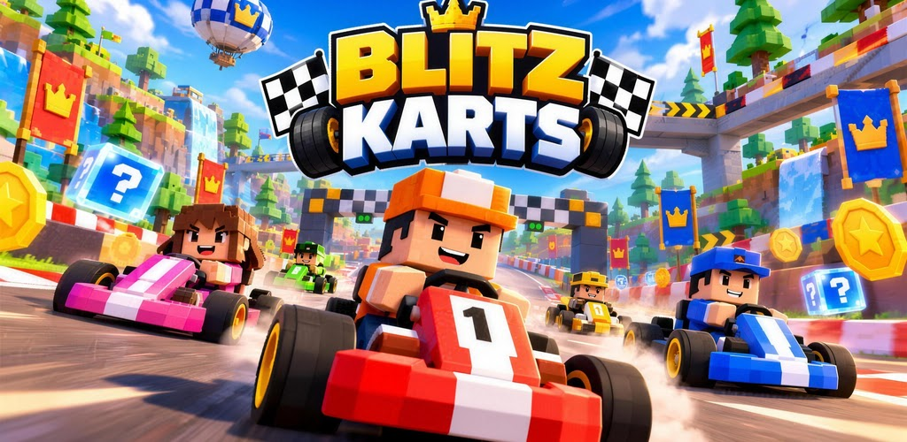

Blitz Karts: Corrida de Kart
Corrida · Kart · Disponível

Jogo de kart de corrida online com 16 pistas em 9 cenários, 4 copas, 8 pilotos e 8 karts. Derrape para carregar o turbo e use itens para virar a corrida até a linha de chegada.
Corrida · Kart · Disponível

Jogo de kart de corrida online com 16 pistas em 9 cenários, 4 copas, 8 pilotos e 8 karts. Derrape para carregar o turbo e use itens para virar a corrida até a linha de chegada.